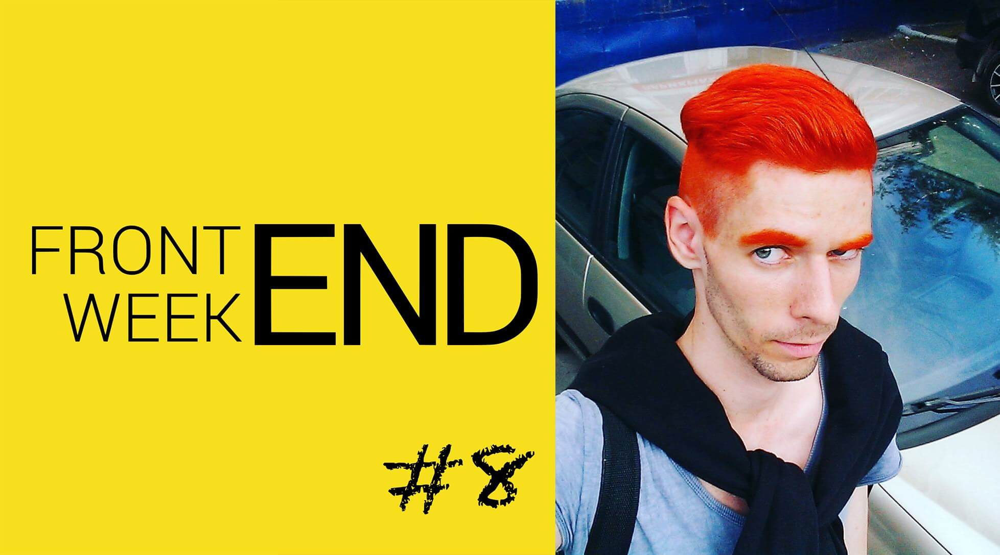
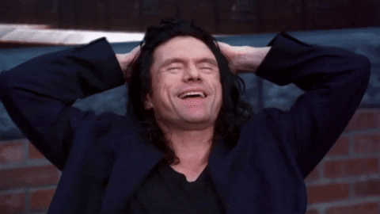
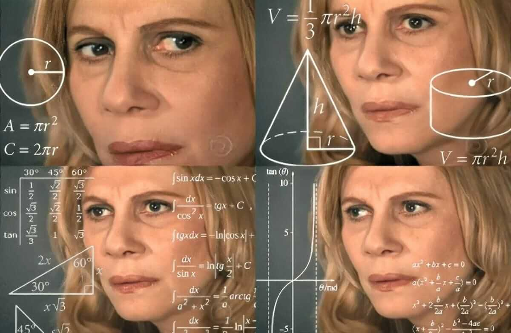
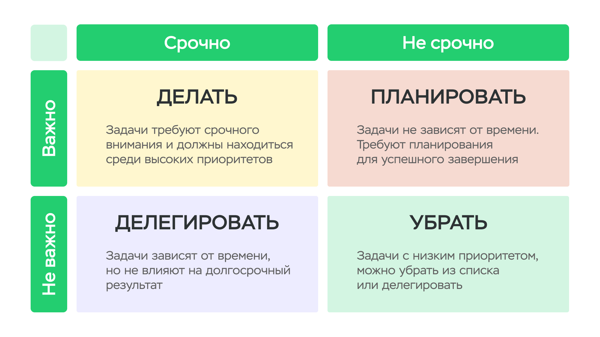
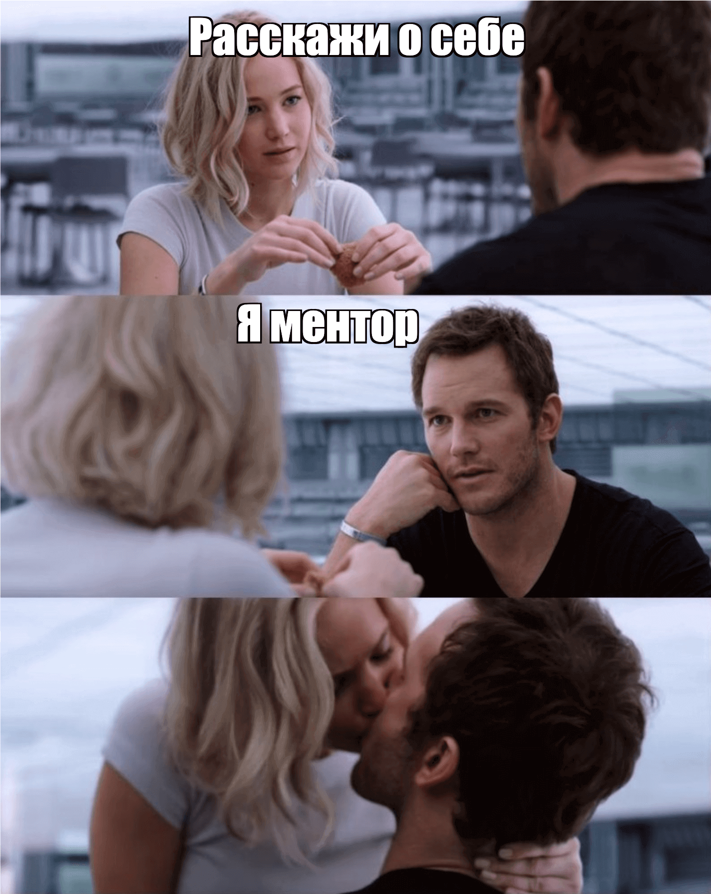
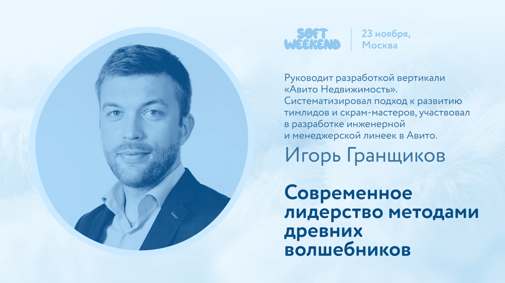
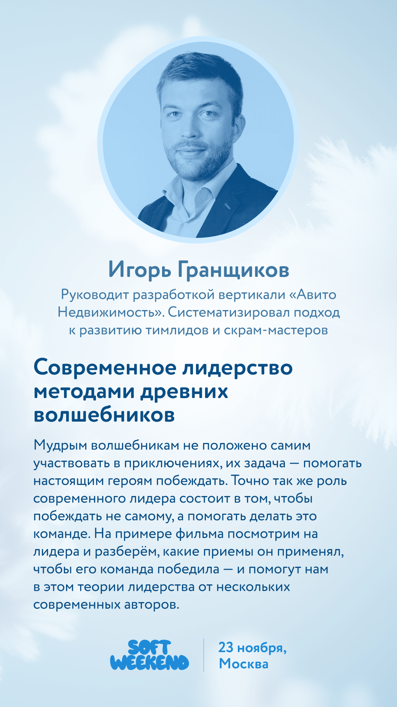
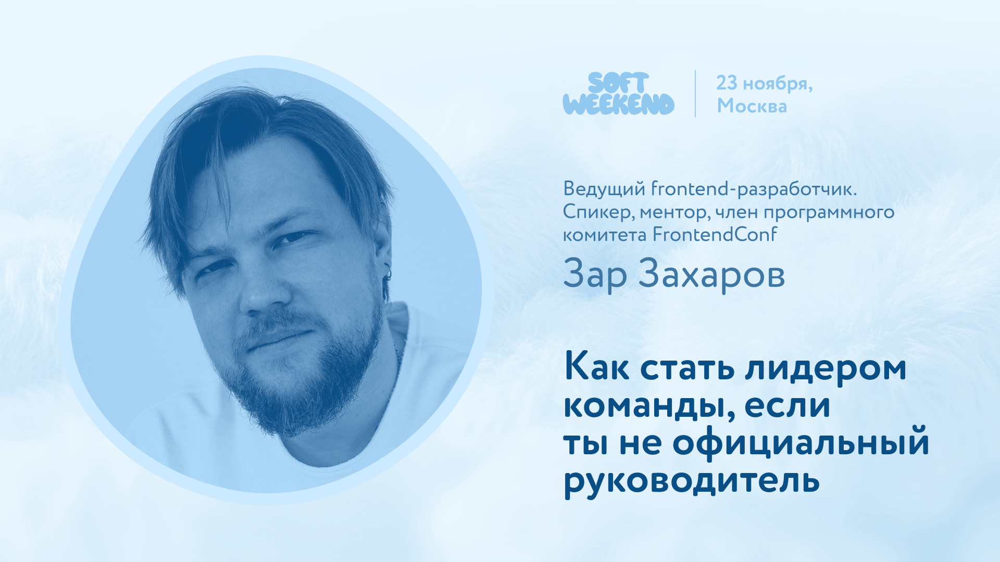
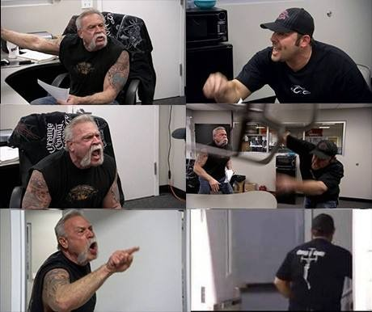
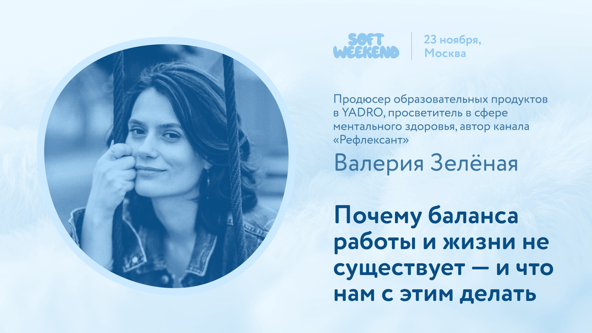

Управляемый хаос как продуктивная среда для роста
Дисклеймер
🙊 Моё личное мнение
🤷🏻 Основанное на собственном опыте
Два экстремума
Тотальная зона комфорта
Тотальная зона комфорта
👍🏻 Полная безопасность
👍🏻 Четкие рамки
👎 Ограниченные возможности
для инициативы и роста

Максимальный хаос
Максимальный хаос
👍🏻 Широкий спектр задач
👎 Вероятное выгорание
👎 Отсутствие точек опоры
Управляемый хаос
Баланс
Баланс между порядком и творческими возможностями
Примеры
Перепрыгивал грейд
Полностью перестраивал найм
Внезапно становился директором
Выстраивал процессы с нуля
Брал ответственность за что-то новое
«Ты молодец, конечно...»

«А нам что с этим делать?»
Нужно проанализировать себя
Какие софт скиллы помогают вырасти в управляемом хаосе?
Стойкость
Возникает куча сложностей и поводов для паники
Сначала анализируйте происходящее

Вижу плюсы в реструктуризациях
Умение расставлять приоритеты
Много задач и мало ресурсов – невозможно сделать всё сразу
Матрица Эйзенхауэра

Советы
Определяйте задачи с наибольшим влиянием на результат
Регулярно пересматривайте приоритеты
Тайм-менеджмент
В сумбуре и куче задач важно не утонуть в дедлайнах
Советы
Выгружайте на бумагу накопившиеся задачи
Блокируйте время для фокусной работы
Оставляйте буфер на форс-мажоры
Самостоятельное обучение
Никто вас особо обучать не будет
Советы
Придумывайте себе сами план обучения
Постоянно впитывайте новую информацию
Не бойтесь задавать вопросы
Найдите ментора
🤷🏻 Среди старших коллег
📏 Среди окружения
🔎 На ресурсах поиска ментора

Обработка обратной связи
Сложно оценить эффективность без стороннего мнения
А его может не быть
Советы
Запрашивайте фидбэк у максимального количества коллег
Воспринимайте как точки роста, не как критику


Адаптивное лидерство – когда приходится брать инициативу
Советы
Будьте открытым к предложениям команды
Сохраняйте нейтралитет в конфликтных ситуациях
Вдохновляйте коллег, даже без формального лидерства

Креативность
Решения из опыта не работают, нужно придумать новое
Советы
Ищите нестандартные решения даже в рутинных задачах
Участвуйте в ЧГК, квизах и других мозговых штурмах
Управление стрессом
Хаотичная среда может быть эмоционально выматывающей

Советы
Снимать напряжение с помощью спорта, медитаций и т.д.
Искать пресловутый work-life balance

Нетворкинг
Раскрываются возможности через знакомства и помощь от коллег
Советы
Помогайте, чтобы создать репутацию надёжного партнёра
Активно поддерживайте контакты
Посещайте профессиональные мероприятия
Получите поддержку
Управление неопределенностью
Отсутствие ясных инструкций и прозрачных целей
Неопределенность – часть процесса
Советы
Фокусируйтесь на том, что можно контролировать
Максимально декомпозируйте задачи
Пространство возможностей для карьерного и личностного роста
Безусловно, люди растут везде
Видеть плюсы в нестабильности и использовать её в свою пользу
Вопросы?
@itsmirnov
Голосуй за доклад!